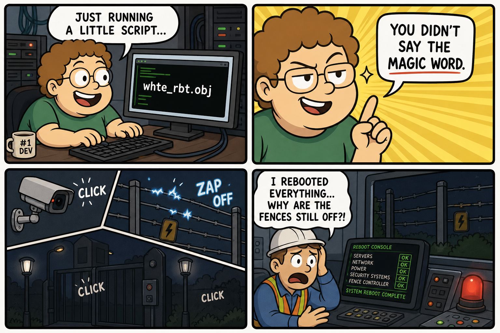
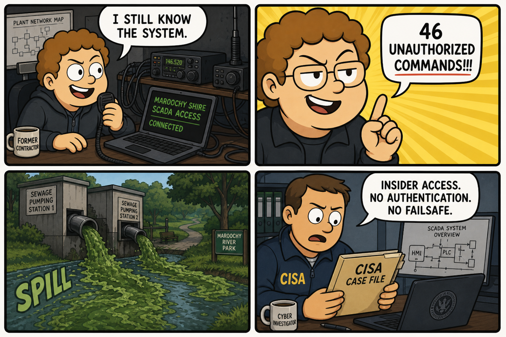

Module 03 / Building & Perimeter Automation Jurassic Park (1993)
Insider threat, an undocumented automation job, and the hazard of a cold restart with no state verification.
The Script — Cinematic Anchor
Dialogue Extract
Scene Visual — Comic Strip

Dramatis Personae → OT Mapping
- Dennis Nedry (Chief Programmer)→Privileged Systems Administrator / Insider Threat — sole author and gatekeeper of the park's control software
- John Hammond (Park Owner)→Site Executive Sponsor — accountable for the overall system but not for its technical governance
- Ray Arnold (Chief Engineer)→OT/Control Systems Engineer — attempts system recovery via a full reboot under time pressure
- Robert Muldoon (Game Warden)→Physical Security / Safety Officer — responsible for containment once electronic controls fail
Diegetic Failure Mode
A single insider with unilateral, unreviewed access to the park's control software embeds a hidden job that disables security, communications, and every perimeter safety interlock at once, to mask a data/asset exfiltration. The subsequent hard reboot — performed without any procedure for verifying and manually re-energizing safety-critical systems — restores general functionality but not the fences' prior secure state, and the outage window is enough for physical containment to fail.
Theoretical ICS Architecture
Purdue Model Impact
Protocols & Control Logic
The film does not name a real protocol, but the architecture it depicts — one unified, flat control system with no boundary between guest-facing IT and safety-critical field control — is the exact condition ISA/IEC 62443's zone-and-conduit model exists to prevent.
- Latching safety interlock: perimeter fences function as a continuously-energized safety barrier; the design lesson is that such interlocks must default to their last-known-safe (energized) state on any unexpected restart, not to "off."
- Single point of privileged control: one individual held unreviewed write access to safety-relevant logic — a direct violation of least-privilege and separation-of-duties principles for safety-critical systems.
- No command source authentication: nothing in the depicted system verifies that a given command (including the hidden job itself) originates from an authorized, reviewed source.
The Plant — Empirical Grounding
Plant Visual — Comic Strip

Real-World Incident Precedent
The closest documented real-world analog is the Maroochy Shire sewage SCADA sabotage (Queensland, Australia, February–April 2000). Vitek Boden, a former contractor for the SCADA system's installer, used stolen radio equipment and control software — knowledge and access he retained from his prior role — to issue at least 46 unauthorized commands to sewage pumping stations over roughly two months, causing an estimated 800,000 liters of raw sewage to spill into local waterways and parks. It remains one of the most frequently cited real insider-enabled ICS attacks in CISA and DHS case studies precisely because it demonstrates unauthenticated remote command injection by someone with legitimate system knowledge.
Cinematic vs. Reality Matrix
| Dimension | Media Depiction (The Script) | Industrial Reality (The Plant) |
|---|---|---|
| Failure Vector | A single hidden script execution disables every system at once — cameras, phones, and every fence — as one dramatic kill-switch event. | Maroochy: a campaign of at least 46 distinct unauthorized commands issued over roughly two months, not a single simultaneous shutdown. |
| Time to Impact | Security failure and animal breach occur within minutes of the script running. | Each Maroochy command caused a localized pump station malfunction within minutes, but the full campaign went undetected for weeks before being traced to deliberate sabotage. |
| Operator Visibility | Arnold and Muldoon are unaware anything is wrong until camera feeds freeze and fences show no warning indication. | Maroochy operators initially attributed anomalies to equipment or communication faults, taking an extended period to recognize deliberate unauthorized access — the system had no way to distinguish an authorized command from Boden's. |
| Failsafe Behavior | A cold reboot restores general system function but not the fences' prior secure, energized state — requiring manual re-energization under time pressure. | Maroochy's control system enforced no fail-secure default and no source authentication, meaning any correctly-formatted radio command — legitimate or not — was accepted and executed as if authorized. |
Root-Cause Analysis (RCA)
Classification: Network/Cyber (Insider Threat) + Process DesignPrimary root cause is a network/access-control failure: an unsegmented system with no command-source authentication, combined with a single individual holding unreviewed, unilateral write access to safety-critical logic. A contributing process-design factor is the absence of a fail-secure default — neither the fictional park nor the real Maroochy system was designed to default to a safe state when communication or control was disrupted.
Engineering Runbook & Countermeasures
Telemetry Envelope
| Parameter | Normal / Baseline | Trip / Alarm Threshold | Condition at Failure |
|---|---|---|---|
| Perimeter fence energization | Continuously energized, ~10,000V pulsed | Alarm on any de-energization event with position/status telemetry | De-energized for the duration of the hidden job's execution, with no logged alarm |
| Pump station status (Maroochy analog) | Continuous run/alarm status reporting to central SCADA | Alarm on unexpected pump stoppage or unauthorized setpoint change | Status suppressed or falsified intermittently across at least 46 separate events over ~2 months |
Mitigation / Recovery Protocol
- Network segmentation: isolate physical-security and safety-interlock systems from general site IT/guest networks per the IEC 62443 zone-and-conduit model.
- Privileged access control & code review: require two-person review and change control for any script or logic change deployed to safety-critical systems — no single individual should hold unilateral write access.
- Fail-secure default state: design interlocks (fences, gates, locks) to default to their last-known-safe state on any unexpected restart or communication loss, never to "off" by default.
- Command source authentication: require authenticated, logged commands to remote field equipment — the specific fix mandated for SCADA radio links following Maroochy.
- Cold-start verification procedure: mandate manual verification of every safety-critical system's state before resuming normal operations after any reboot, rather than assuming restoration.